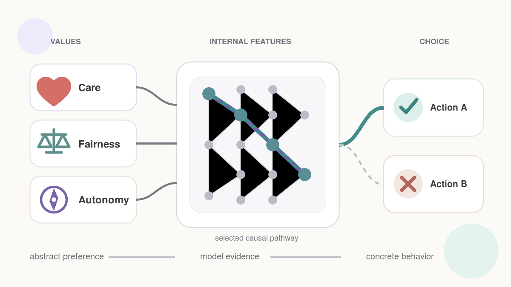

I am currently a second-year PhD student in Purdue ECE, advised by Xiaoqian (Joy) Wang, working on LLM interpretability. I am also a co-founder of Blossoms AI and School Brain.
I earned B.A. degrees in Computer Science and Mathematics, with a minor in Philosophy, from Boston College. During my undergraduate studies, I was advised by Professors Emily Prud’hommeaux, Sergio Alvarez, Yuan Yuan, and Maira Marques Samary.
Email:zhan5982@purdue.edu
Interests
AI/ML research
Mechanistic interpretability
LLM interpretability
AI safety
Modular neural networks
Philosophy
Epistemology
Philosophy of science
Philosophy of religion
Postmodernism
History
Chinese history
Roman history
Medieval history
Mughal history
Safavid history
Ottoman history
Awards & Achievements
John McCarthy, S.J., Award for Natural Science — Boston College, May 2024. Awarded annually to one student for the best senior thesis in Natural Science.
Neuhauser Award — Boston College Computer Science, May 2024. Awarded annually to 1–2 Computer Science students receiving exceptional recognition from faculty.
Scholar of the College — Boston College, May 2024. Awarded to exceptional students who completed substantial, high-quality independent work under faculty supervision.
Research Projects
Research visual withheld during peer review.
Research title withheld during peer review
in review NeurIPS 2026
Research summary and project details are withheld while the work is under review.
Title and details withheld during review.
Research visual withheld during peer review.
Research title withheld during peer review
in review AAAI 2027
Research summary and project details are withheld while the work is under review.
Title and details withheld during review.

How values may connect to internal features and concrete choices.
Value Action: from abstract values to concrete choices
ongoing research Mechanistic interpretability · language model behavior
We study how language models translate abstract value preferences into concrete choices. The project connects behavioral experiments with activation-level and causal evidence inside the model.
From individual interpretability methods to a reusable formal toolkit.
A Framework for Formalizing and Automating Interpretability
academic work Boston College senior thesis · 2024
My senior thesis introduced the Formalizing and Automating Interpretability Toolkit (FAI), a structured way to describe, compare, select, and implement interpretability methods.
I co-founded Blossoms AI in 2023 and serve as Chief AI Officer (CAIO). The next generation of education will be AI-native—inevitably—and we are building for it now.
Our newest app
MenoLearn
If you can’t find a good course, it may be because the subject is:
Too new for an established curriculum
Too interdisciplinary or specialized for existing resources
So unfamiliar you don’t even know what questions to ask
MenoLearn turns anything you want to learn into a course. Get a deeply researched, well-sourced, comprehensive course—or an organized path of courses—built around your topic.
Adoption: Within two months of release, MenoLearn reached more than 300 users.
A course-customized platform for university computer science education.
Preserves each instructor’s existing course:
Units, lessons, and textbooks
Assignments, exams, question banks, and rubrics
Adds:
Embedded VS Code–based coding environment
Code checking
Adaptive test-script generation
Rubric-aligned auto-grading
Contextual hints
Customized practice generation
Performance analytics for instructors and students
Adoption: Used by computer science departments at universities in the United States and Canada.
School Brain
I am a co-founder and the Chief AI Officer (CAIO) of School Brain. We collaborate with school districts—primarily in Florida and Illinois—to build customized transportation and operations products for live workflows.
Choose a product or image, or let the evidence progress
AI research assistant & reusable skills
I use Hermes as an AI research assistant and project collaborator inside Discord. It supports my research, product development, writing, and broader knowledge work. The public repository below collects the reusable skills and artifact workflows that grew out of this work.
A persistent workspace that keeps the discussion, decisions, and linked artifacts together.
Long research threads → durable working context
Thread Canvas
Thread Canvas turns long research conversations into a durable workspace with the discussion, decisions, and artifacts in one place, so important context remains usable after the chat moves on.